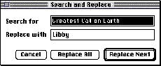

|
|
Modeless Dialog Box BehaviorsThis section describes the standard behaviors and the issues that you need to resolve when you implement modeless dialog boxes in your application. It includes discussions of how to use modeless dialog boxes to change attributes in a document or an application and how to use modeless dialog boxes to perform actions on a document.Menu Bar AccessAlthough system software leaves the Help, Keyboard, and Application menus and their commands enabled, it does nothing else to manage the menu bar when you display a modeless dialog box. Your application is responsible for providing access to the rest of the menus in your menu bar as appropriate. Disable only those menus that contain commands that are invalid in the current context; if the modeless dialog box includes editable text items, enable the Cut, Copy, Paste, and Clear commands (and any other appropriate commands) in the Edit menu. For example, when a modeless dialog box used with a search-and-replace command appears, the application should allow access to the Edit menu to assist the user with the editable text items; it should also allow access to the File menu so that the user can open another file for searching and replacing text. However, your application should disable other menus if the commands in those menus cannot be used inside the active modeless dialog box. After your application removes a modeless dialog box, always restore the menus to their previous states.Accepting Changes in a Modeless Dialog BoxOne purpose for using a modeless dialog box is to give the user an opportunity to change something in the active document or application. For example, you could implement a modeless dialog box for finding text and replacing it with other text. With modeless dialog boxes, people enter information by setting controls or typing text in a text entry box. |
|
|
In general, all changes that a user enters in a dialog box should appear to take effect immediately whenever possible. There are generally three stages of action in using a modeless dialog box--when keyboard input is entered, when the data is accepted or checked by your application, and when the data takes effect. It is your responsibility to make the three states of using a modeless dialog box as clear as possible to the user. Usually you update controls like checkboxes and radio buttons immediately and display the results as the user clicks the controls. This feedback lets the user see that the information is accurate. If your application doesn't respond immediately to the new settings, it's less clear to the user when the input goes into effect. |
|
|
Deciding when user input takes effect is a significant
issue to resolve with any modeless dialog box. Try to
reinforce the consistency of the interface. People usually
expect to perform some action, such as clicking a button or
closing a window, to cause their input to take effect. For
example, the way a user chooses to dismiss a modeless
dialog box conveys an obvious meaning to the user. The
close box usually means, "I'm done with this task." The
Revert button usually means, "Go back to the previous
state." Similarly, the way a user chooses to implement
changes made in a dialog box conveys an obvious message to
the user. For example, an action button such as Apply
usually means, "Do this task now." Note that people expect
that when they switch to another application, any pending
changes that they may have entered in the dialog box and
implemented with an action button will take effect.
When the user is finished with the current task and is ready to move to another one, the actions the user performs to dismiss a modeless dialog box should signify that fact. As much as possible, implement modeless dialog boxes to respond to user expectations about the results of their actions. You need to decide when your application will do error checking on user input. There are several approaches you can take depending on the circumstances and the user's expectations. One approach is to implement the input as the user tabs from one field to the next. The drawback to this approach is that it isn't clear to the user that the changes are taking effect. The user doesn't click a button, and so isn't aware of completing an action. The user may decide to go back to a field and change the current value. In this case, your application needs to cycle through the event loop again to process the input. Another approach is to save user input in a queue and activate it when the user clicks a button, closes the dialog box, or switches to another application. This method also presents certain complications for your application. If your application waits to check any user input for errors until the user tries to dismiss the dialog box and move on, you may end up having to present a modal dialog box to inform the user of some input error and thereby force the user to start the process again. If you do your error checking as the user enters input, it takes more time up front, but you can warn the user immediately. In addition to error checking, you need to decide when to activate user input. This input can take effect immediately in some cases. If it's appropriate to wait until the user performs an action like clicking a button or switching applications, an intermediate state where user settings are pending can cause security problems. For instance, if a user changes permissions on a file server by using checkboxes in a modeless dialog box and your application does error checking immediately, there's a delay during which the user can't finish setting all the new access permissions and the system may be temporarily less secure and open to trespass. You should consider the tradeoffs between the danger of leaving a system less secure for some period of time versus any inconvenience to the user of waiting to have the error checking done after all values are set. |
|
|
Applications differ in the order in which they check user input. Some applications check numerals in text entry boxes as the user enters them, some applications check the data when the user clicks in another field or presses Tab to move out of the current field, and others check when the user clicks an action button. Each of these techniques can work if you provide appropriate feedback to users so that they know what to expect and how to handle any error conditions. |
|
After you have decided when to check user input for errors
and when to activate it, you need to determine whether your
application should automatically launch an operation based
on the input or whether the user should try to launch the
operation by clicking a button or the Close box of a dialog
box. To help you make your decision, try to estimate how
long an operation will last. It's probably OK to run an
operation that happens quickly and returns control to the
user within a couple of seconds. The user should initiate
any operation that will take a long time to execute. You
can then provide information that warns the user that the
operation will last for a while, estimating the length of
time when possible.
The Info window for applications provides an example of behaviors for acting on user input immediately and waiting until the user explicitly initiates an action. The Locked checkbox in the Info window immediately takes effect when the user clicks it. The file remains locked until the user clicks the box again to unlock the file. This system works to the advantage of the user because the checkbox reflects the user's action and the action is immediately in effect. A different process occurs with the application-size text entry box in the Info window. The text entry box immediately displays the user's input. The application memory size is verified and accepted when the user closes the window. In this case, it's not dangerous to wait to accept the input until the user closes the Info window, and the user feels like the input is in effect immediately because the text entry field provides feedback that the input is acceptable by updating its contents. (This feedback is accurate unless the user enters 0, in which case the previous value is used.) Carefully evaluate each situation in each of your modeless dialog boxes and choose the approach that meets the users' needs and expectations as closely as possible. It's a good idea to do some usability testing to verify your choices. See the section "Involving Users in the Design Process" beginning on page 39 in Chapter 3, "Human Interface Design and the Development Process," for information about performing user observations to test your product. Completing CommandsAnother purpose for using a modeless dialog box is to complete an action begun with a command in a menu. In this case the user gives additional information to the application in a modeless dialog box. The information might consist of additional parameters to the command, such as, "Do the task . . . in this way." The user might give specific information that an operation needs. For example, with the command that allows a user to search for words in a document, the user needs a place to type the word or characters being searched for, as shown in Figure 6-6.Figure 6-6 Provide a place for the user to enter information in a modeless dialog box  Modeless dialog boxes should be dynamic in nature, updating the document continuously while open. If the dialog box for a particular feature is not designed to interact dynamically with the user, you might think about implementing that feature in a modal dialog box. |